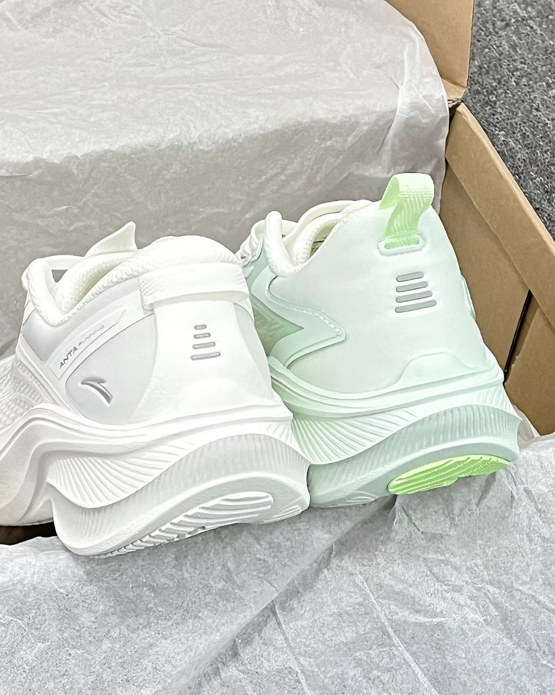

汐汐不嘻嘻
极限二选一！Hello~大家好！这里是以梦喂马 今天和大家分享两双适合新手的跑步鞋 分别是安踏白绿叶子和纯白叶子5 安踏叶子5白色 实物是很干净的白色，小白鞋的即视感！怎么搭都好看~鞋面是网纱和织物双层的设计，柔软不硌jio透气性也不错，中底我穿着软软弹弹的脚感，日常跑跳都没有问题！ 安踏叶子白绿 白绿渐变的配色一见倾心~我觉得这个配色更适合春 夏两个季节！鞋面的相较于前者多了一些压胶，支 撑性会好一些！中底软软弹弹的脚感! 共同缺点：不耐脏！！因为都是双层鞋面，不好打 理！下雨天不要穿！下雨天不要穿！下雨天不要 穿！ 尺码方面：正常选择就可以不偏码 @得物社区小秘书 @得物创作课代表 #新手入门跑鞋 #学生党性价比跑鞋 #长期主义好鞋 #秋冬鞋柜大焕新 #最近很喜欢的鞋 #冬日运动穿这双

评论区
刁子
海星